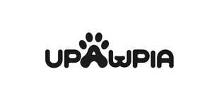

Trade Mark Journal No.2025/015 11 April 2025
UK00004178747 25 March 2025 (8,9,18,20,21,28)

- Class 8
- Dog clippers; Hand-operated nail clippers for pets.
- Class 9
- Dog whistles; Life jackets for pets; Life-saving vests for dogs; Lifesaving vests for use by dogs; Pedometers; Sunglasses for pets; Electronic animal identification apparatus; Electronic collars to train animals.
- Class 18
- Bags for carrying pets; Pet clothing; Collars for pets; Collars for pets bearing medical information; Dog bellybands; Dog collars; Dog leashes; Dog shoes; Dog waste bag dispensers adapted for use with leashes; Raincoats for pet dogs; Rawhide chews for dogs; Pet hair bows; Pet leads.
- Class 20
- Barrels (Non-metallic -) for the identification of pet animals; Beds for pets; Cat trees; Dispensers, not of metal, for dog waste bags; Dog tags, not of metal; Grooming tables for pets; Nesting boxes for pets; Non-metal safety gates for babies, children, and pets; Pet crates; Pet cushions; Pet furniture; Pet grooming tables; Portable beds for pets; Scratching posts for cats; Sofas.
- Class 21
- Automatic litter boxes for pets; Automatic pet feeders; Cages for pets; De-shedding combs for pets; Dog food scoops; Electric pet brushes; Non-mechanized pet waterers in the nature of portable water and fluid dispensers for pets; Litter boxes for pets; Toothbrushes for pets; Pet feeding and drinking bowls; Pet grooming glove; Pet paw cleaners, non-electric; Pet treat jars; Plastics trays for use as litter trays for cats.
- Class 28
- Ball launchers for pets; Dog toys; Exercise treadmills; Imitation bones being toys for dogs; Pet toys; Pet toys containing catnip; Pet toys made of rope; Snuffle mats being dog toys; Sports equipment for pets; Toy dogs; Toys and playthings for pets; Toys for cats; Toys for domestic pets; Toys for translating feelings of pets; Toys, games and playthings for pet animals.
Guangdong Honghai Import and Export Consulting Co., Ltd.
Representative: Ruby Wang